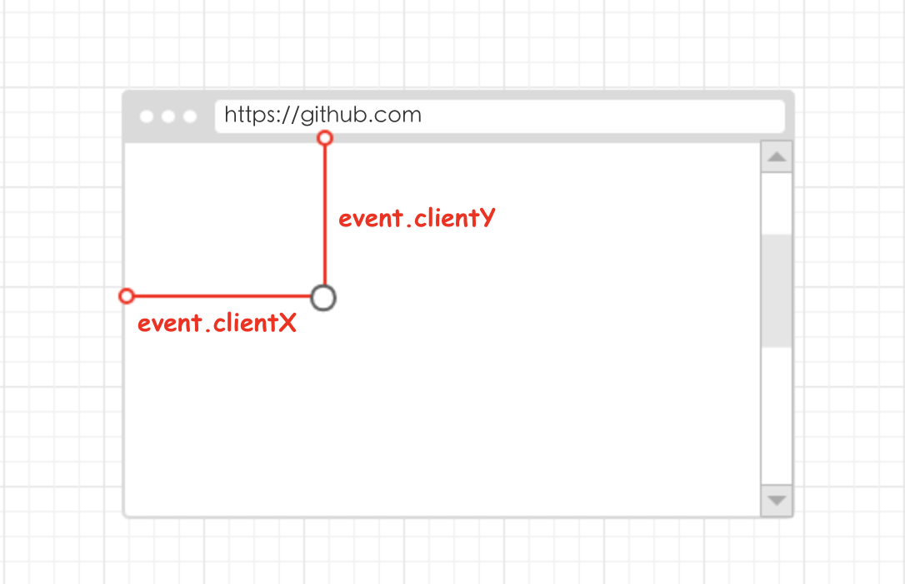
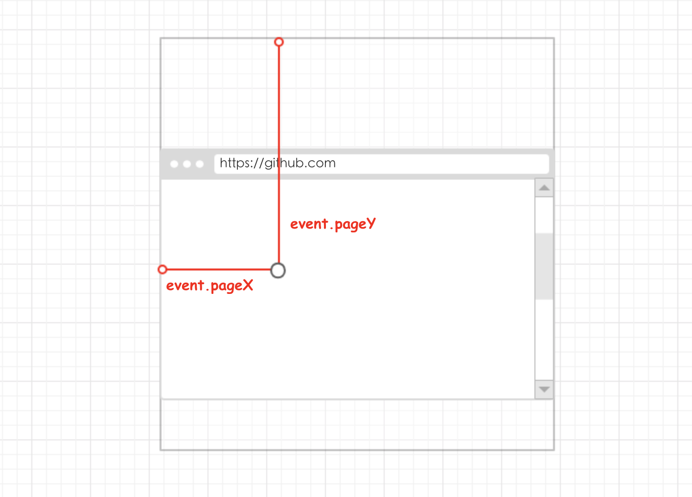
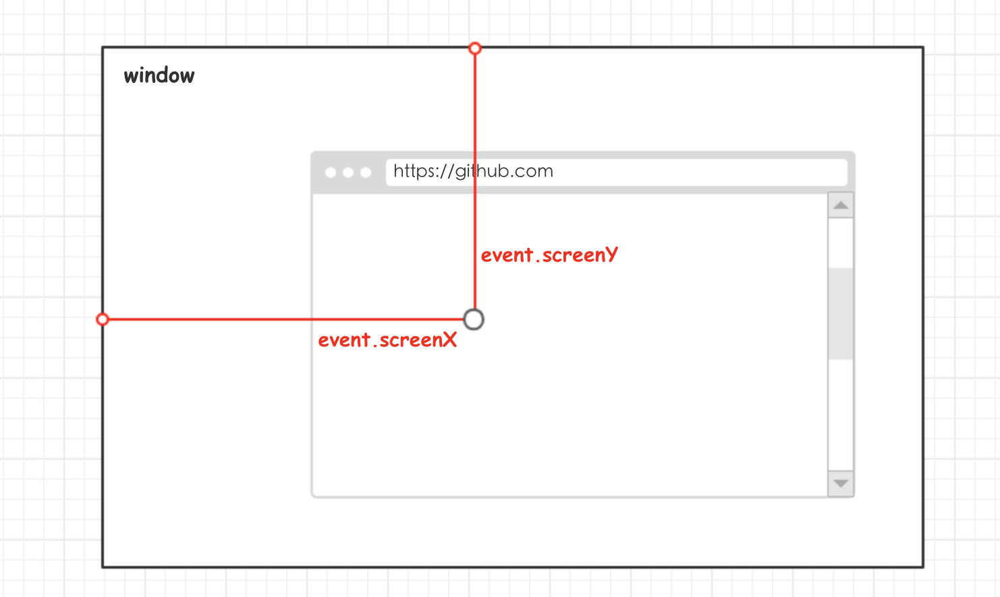

鼠标事件 MouseEvent
常见的鼠标事件主要是以下几种：
| 方法 | 说明 |
|---|---|
| click | 在用户单击主鼠标按钮（一般是左边的按钮）或者按下回车键触发。这一点对确保易访问性很重要，意味着 onclick 事件处理程序即可以通过键盘也可以通过鼠标执行。 |
| dbclick | 在用户双击主鼠标按钮（一般是左边的按钮）时触发。 |
| mousedown | 在用户按下了任意鼠标按钮时触发。 |
| mouseup | 在用户释放鼠标按钮时触发。 |
| mouseenter | 鼠标光标从元素外部首次移动到元素范围之内时触发。这个事件不冒泡，而且在光标移动到后代元素上不会触发。 |
| mouseleave | 在位于元素上方的鼠标光标移动到元素范围之外时触发。这个事件不冒泡，而且在光标移动到后代元素上不会触发。 |
| mousemove | 当鼠标指针在元素内部移动时重复地触发。 |
| mouseover | 在鼠标指针位于一个元素上方，然后用户将其移入另一个元素时触发。又移入的另一个元素可能位于前一个元素的外部，也可能是这个元素的子元素。 |
| mouseout | 在鼠标指针位于一个元素外部，然后用户将其首次移入另一个元素边界之内时触发。 |
| contextmenu | 弹出右键菜单 |
| auxclick | |
| pointerlockchange | |
| pointerlockerror | |
| select | |
| wheel |
页面上的所有元素都支持鼠标事件。除了 mouseenter 和 mouseleave，所有鼠标事件都会冒泡，也可以被取消，而取消鼠标事件将会影响浏览器的默认行为。取消鼠标事件的默认行为还会影响其他事件，因为鼠标事件与其他事件是密不可分的关系。
在 HTML5 中鼠标有了新的事件，如下表格：
| 方法 | 说明 |
|---|---|
| ondrag | 元素被拖动时运行的脚本 |
| ondragend | 在拖动操作末端运行的脚本 |
| ondragenter | 当元素元素已被拖动到有效拖放区域时运行的脚本 |
| ondragleave | 当元素离开有效拖放目标时运行的脚本 |
| ondragover | 当元素在有效拖放目标上正在被拖动时运行的脚本 |
| ondragstart | 在拖动操作开端运行的脚本 |
| ondrop | 当被拖元素正在被拖放时运行的脚本 |
| onmousewheel | 当鼠标滚轮正在被滚动时运行的脚本 |
| onscroll | 当元素滚动条被滚动时运行的脚本 |
客户区坐标位置
鼠标事件都是在浏览器视口的特定位置上发生的。这个位置信息保存在事件对象的 clientX 和 clientY 属性中。所有浏览器都支持这两个属性，它们的值表示事件发生时鼠标指针在视口的水平和垂直坐标。
页面坐标位置
通过客户区坐标能够知道鼠标是在视口中发什么位置发生的，而页面坐标通过事件对象的 pageX 和 pageY 属性，能告诉你事件是在页面中的什么位置发生的。换句话说，这两个属性表示鼠标光标在页面中的位置，坐标是从页面本身而非视口中的左边和顶边计算的。
屏幕坐标位置
鼠标事件发生时，不仅会有相对于浏览器窗口位置，还会有一个相对于整个电脑屏幕的位置。而通过 screenX 和 screenY 属性就可以确定鼠标事件发生时鼠标指针相对于整个屏幕的坐标信息。
修改键
虽然鼠标事件主要是使用鼠标来触发的，便在按下鼠标时键盘上的某些键的状态也可以影响到所要采取的操作。这些修改键主是 Shift、Ctrl、Alt 和 Meta（在 window 中的 Windows 键，在 macOS 中是 Cmd 键)，它们经常被用来修改鼠标事件 的行为 。DOM 为此规定 4 个属性，表示这些修改键的状态，shiftKey,ctrlKey,altKey 和 metaKey。这些属性中包含的都是布尔值，如果相应的键被按下了，则值为 true，否则值为 false。当某个鼠标事件发生时，通过检测这几个属性就可以确定用户是否同时按下其中的键。
- Shift
- Ctrl
- Alt
- Meta（window&command）
相关元素
在发生 mouseover 和 mouseout 事件时，还会涉及更多的元素。这两个事件都会涉及把鼠标指针从一个元素的边界之内移动到另一个元素的边界之内。对 mouseover 事件而言，事件的主要目标是获得光标的元素，而相关元素就是那个失去坐标的元素。类似地，对 mouseout 事件而言，事件的主要目标是失去光标的元素，而相关元素则光标的元素。
DOM 通过 evnet 对象的 relatedTarget 属性提供的相关元素信息。这个属性只对于 mouseover 和 mouseout 事件才包含值 ，对于其它事件 ，这个属性的值是 null，IE8 及之前版本不支持 relatedTarget 属性，但提供了保存着同样信息的不同属性。 在 mouseover 事件触发时，IE 的 fromeElement 属性中保存了相关元素；在 mouseout 触发时，IE 的 toElement 属性中保存着相关元素。（IE9 支持所有 这些属性）可以把下面这个跨浏览器取得相关绵方法添加到 EventUtil 对象中。
鼠标按钮
只有在主鼠标按钮被单击（或键盘回车键被按下）时才会触发 click 事件，因此检测按钮的信息并不是必要的。但对于 mousedown 和 mouseup 事件来说，则在其 event 对象存在 一个 button 属性，表示按下或释放的按钮。DOM 的 button 属性可能有如下 3 个值：0 表示主鼠标按钮，1 表示中间的鼠标按钮（鼠标滚轮按钮），2：表示次鼠标按钮。在常规的设置中，主鼠标按钮就是鼠标左键，而次鼠标按钮就是鼠标右键。
- 1：表示按下了主鼠标按钮
- 2：表示按下了次鼠标按钮
- 3：表示同时按下了主、次鼠标按钮
- 4：表示按下了中间的鼠标按钮
- 5：表示同时按下了主鼠标按钮和中间的鼠标按钮
- 6：表示同时按下了次鼠标按钮和中间的鼠标按钮
- 7：表示同时按下了三个鼠标按钮
鼠标滚轮事件
鼠标滚轮事件指当在被绑定的对象上发生鼠标滚轮滚动时触发的事件。
在不同浏览器有不同的表现形式：
IE/Chrome
IE/Chrome 下的事件：onmousewheel
- 事件绑定方式：
on或者addEventListener[attachEvent] - 获取滚轮事件具体信息：
event.wheelDelta
向上滚动：120的倍数
向下滚动：-120的倍数
通过 wheelDelta 属性的正负号可以判断鼠标滚轮滚动的方向。
Firefox
Firefox 下的事件：DOMMouseScroll
- 事件绑定方式：
addEventListener - 获取滚轮事件具体信息：
event.detail
向上滚动：-3的倍数
向下滚动：3的倍数
触摸设备
iOS 和 Android 设备的实现非常特别，因为这些设备没有鼠标。在面向 iPhone 和 iPod 中的 Safari 开发时，要记住以下几点。
- 不支持
dbclick事件。双击浏览器窗口会放大画面，而且没有办法改变该行为。 - 轻击可单击元素会触发
mouseover事件。如果此操作会导致内容变化，将不再有其他事件发生；如果屏幕没有因此变化，那么会依次发生mousedown、mouseup和click事件。轻击不可单击的元素不会触发任何事件。可单击的元素时指那些单击可产生默认操作的元素（如链接），或者那些已经被指定了onclick事件处理程序的元素。 mousemove事件也会触发mouseover和mouseout事件。- 两个手指放在屏幕上且页面随手指移动而滚动时会触发
mousewheel和scroll事件。
无障碍性问题
如果你的 Web 应用程序或网站要确保残疾人特别是那些使用屏幕阅读器的人都能访问，那么在使用鼠标事件时就要格外小心。前面提到过，可以通过键盘上的回车键来触发 click 事件，但其他鼠标事件却无法通过键盘来触发。为此，我们不建议使用 click 之外的其他鼠标事件来展示功能或引发代码执行。因为这样会给盲人或视障用户造成极大不便。一下时在使用鼠标事件时应当注意的几个易访问性问题。
- 使用
click事件执行代码。有人指出通过onmousedown执行代码会让人觉得速度更快，对视力正常的人来说这是没错的。但是，在屏幕阅读器中，由于无法触发mousedown事件，结果就会造成代码无法执行。 - 不要使用
onmouseover向用户显示新的选项。原因同上，屏幕阅读器无法触发这个事件。如果确实非要通过这种方式来显示新选项，可以考虑添加显示相同信息的键盘快捷方式。 - 不要使用
dbclick执行重要的操作。键盘无法触发这个事件。
遵照以上提示可以极大地提升残疾人在访问你的 Web 应用程序或网站时的易访问性。
<code src="../../../../example/mouse-event/index.tsx" />
参考资料：